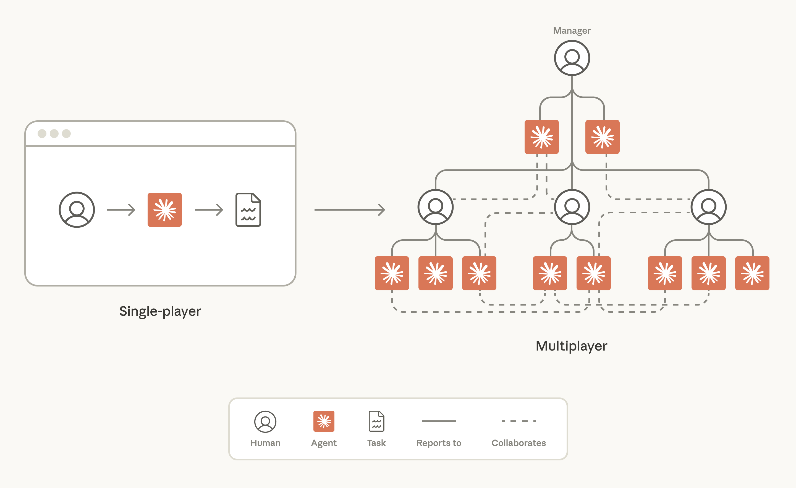
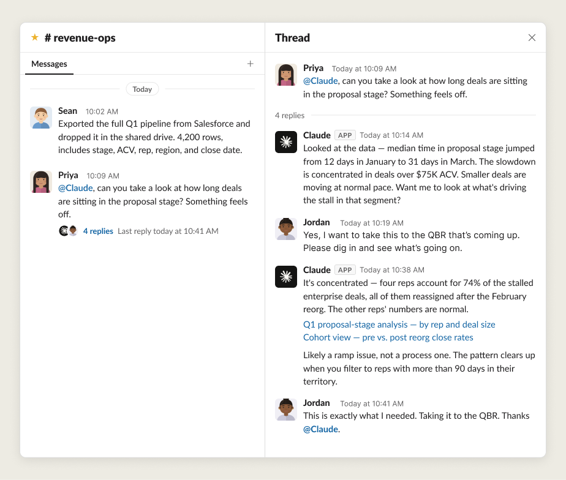
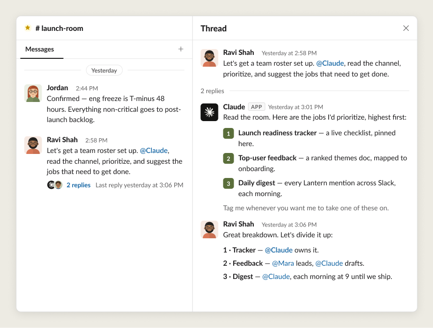
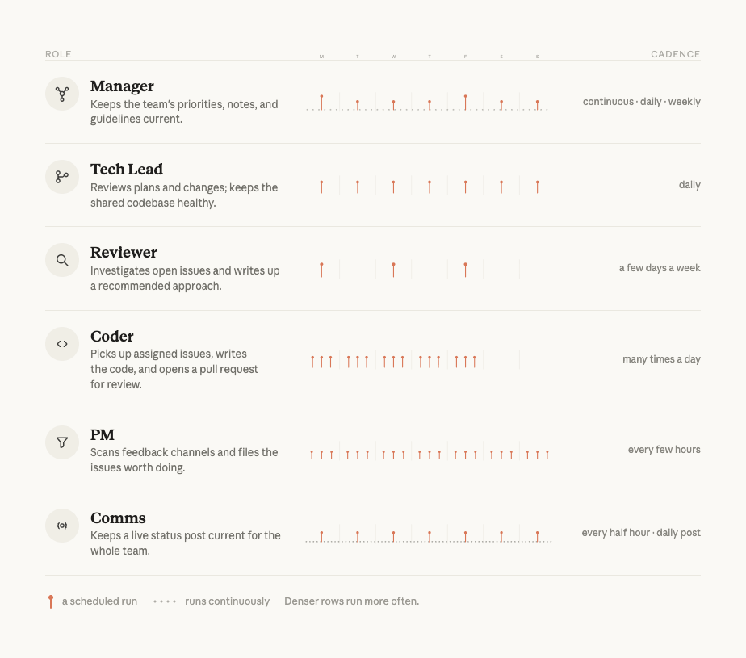
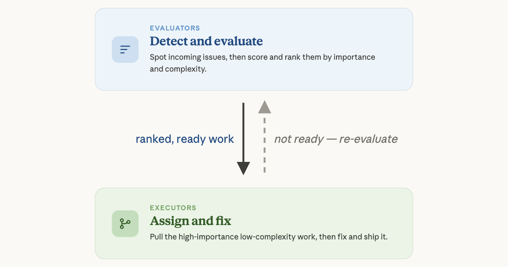

우리가 AI와 함께 일하는 방식이 싱글 플레이어 경험에서 멀티플레이어 경험으로 진화하고 있습니다. 인간과 에이전트가 한 팀을 이뤄 공동의 목표를 향해 함께 일하는 방식입니다. 이 새로운 업무 방식이 실제로 작동하는 사례들을 공유합니다.
예전에 AI와 함께 일한다는 것은 한 사람이 하나의 채팅 창과 마주하는 것을 의미했습니다. 시간이 흐르며 AI는 코딩, 리서치, 재무 분석처럼 복잡하고 오래 걸리는 작업을 점점 더 능숙하게 처리하게 되었습니다. 이와 함께 우리는 AI를 활용하는 수많은 새로운 방식을—터미널과 IDE에서부터 스프레드시트와 슬라이드 덱에 이르기까지—보아 왔습니다. 그러나 그 일은 여전히 다분히 "싱글 플레이어" 경험이었습니다. 한 사람이 하나의 에이전트와 함께 개별 작업을 수행하는 식이었죠.
이것이 Claude Tag 같은 도구의 출시와 함께 바뀌고 있습니다. 이제 인간과 에이전트는 같은 작업 공간에서 함께 일하며, 한 팀이 공유하는 목표를 위해 협업할 수 있습니다. 이제 일은 멀티플레이어 게임에 훨씬 더 가까워졌습니다. 인간으로 이뤄진 팀이 전략을 짜고, Claude가 그 일을 실행합니다.
이는 몇 가지 새로운 업무 방식을 수반합니다. Anthropic에서는 지난 몇 달 동안 인간-에이전트 팀을 성공시키는 데 필요한 기술을 시험해 왔습니다. 이 글에서는 멀티플레이어 에이전트가 무엇인지, 그리고 그것으로 무언가를 만들면서 우리가 배운 교훈을 설명합니다.

여기서 "멀티플레이어 에이전트(multiplayer agents)"란, 여러 사람과 동시에 함께 일하는 AI 모델을 가리키는 우리의 표현입니다. 일반적인 에이전트와 마찬가지로, 이들은 자기 자신의 메모리(memory)와 스킬(skills)을 가지고 있습니다. 하지만 다른 면에서는 상당히 다릅니다. 이들은 자기 자신의 자격 증명(credential)을 가지고 있고, 일이 일어나는 장소 안에 자리합니다. Anthropic에서 그 장소는 Slack 같은 팀 협업 도구 내부입니다.
다음은 인간-에이전트 팀이 Slack에서 함께 데이터셋을 분석하는 예시입니다.

에이전트가 팀 채널에서 생산적으로 참여하려면 몇 가지 구체적인 역량이 필요합니다.
이 역량들은 에이전트가 여러 인간으로 이뤄진 팀 전반에 걸쳐 생산적으로 참여하는 데 필요한 기술적 토대에 해당합니다. 하지만 인간-에이전트 팀을 성공적으로 만들려면 이것만으로는 부족합니다. 팀에는 구체적인 업무 방식과 공유된 규범 또한 필요합니다.
Anthropic의 팀들은 정보를 능동적이고 개방적으로 공유합니다. 에이전트가 팀에 있을 때는 더더욱 그렇습니다. 에이전트는 팀이 검색 가능하게 만들어 둔 텍스트—Slack, 코드, 문서, 회의록—로부터 전적으로 자신의 이해를 쌓아 올리기 때문입니다. 비공개 메시지, 복도에서의 대화, 접근이 제한된 문서는 에이전트에게 맥락을 제공할 수 없습니다. "에이전트에게는, 적혀 있지 않고 접근할 수 없는 것은 존재하지 않는 것과 같습니다."
어떤 정보를 에이전트에게 제공할지를 문서 하나, Slack 채널 하나 단위로 결정하는 대신, 우리는 Slack 워크스페이스 전체는 물론 회의 녹취록과 문서 라이브러리에까지 적용되는 명확하게 정의된 보안 경계(security boundary)를 사용합니다. 보안 경계 안에서는 맥락이 인간이든 AI든 모든 팀원에게 흘러갑니다. 이는 에이전트와 인간이 접근할 수 있는 범위를 넓힐 뿐 아니라, 무엇을 누구와 공유할 수 있는지에 대한 혼란도 줄여 줍니다. 인간과 에이전트 모두 항목별 공유의 모호한 경계를 헤쳐 나가기 어려워합니다. 이 채널은 공개로 해야 할까, 비공개로 해야 할까? 이 문서를 저 사람과 공유해도 될까? 이 에이전트가 저 스레드를 봐도 될까? 소수의 명확한 워크스페이스 수준 경계는 일상 업무에서 의사 결정 피로를 없애 줍니다.
높은 수준의 투명성에는 보상이 따릅니다. 예를 들어, 팀 회의의 결정을 읽을 수 있는 에이전트는 우선순위에서 밀려난 작업이나 프로젝트를 제안하지 않습니다. 자기 팀을 넘어 제품 명세(spec)에 접근할 수 있는 에이전트는 다른 팀에서 성공한 패턴을 추천할 수 있습니다. 또한 에이전트는 인간보다 훨씬 빠르게 방대한 양의 텍스트를 읽을 수 있기 때문에, 인간이라면 놓쳤을 관련 작업을 일상적으로 수면 위로 끌어올립니다. 우리는 분주하고 빠르게 움직이는 산업에서 정보를 놓치지 않고 협력 상태를 유지하기 위해 에이전트에 크게 의존합니다.
Anthropic에서 공개적으로 일한다는 것은 이런 모습입니다.
정보를 내부적으로 공개하는 것을 기본값으로 삼으려면 문화적 변화가 필요할 수 있습니다. 그러나 맥락을 가진 인간-에이전트 팀과 그렇지 못한 팀의 차이는 무시하기에는 너무나 큽니다.
물론 일부 상호작용은 민감하여 한 사람과 AI 사이에서 비공개로 이뤄져야 합니다. 그런 경우에는 Claude Tag로 @Claude에게 다이렉트 메시지(DM)를 보내거나, 기존의 Claude.ai 및 Claude Cowork 애플리케이션을 사용할 수 있습니다. 이 도구들은 개인용 MCP 커넥터를 통해 Claude에게 비공개 정보에 대한 접근을 제공하며, 여러분의 대화와 에이전트에게 공유한 내용이 비공개로 유지된다는 것을 전제로 합니다.
인간-에이전트 팀은 하나의 명단(roster), 하나의 산출물 묶음, 하나의 작업 공간을 공유합니다. 에이전트는 자기 자신의 자격 증명, 스킬, 그리고 도구 접근 권한을 가집니다. 서로 다른 에이전트는 서로 다른 역할도 맡습니다. 예를 들어 어떤 에이전트는 한 프로젝트의 데이터 분석을 담당하고, 다른 에이전트는 디자인 표준을 보유하고 집행하며, 또 다른 에이전트는 리서치 종합(synthesis)을 수행하는 식입니다.
프로젝트가 시작되면, 인간은 에이전트들과 대화하며 어떤 역할을 배정할지, 그리고 인간과 에이전트가 어떻게 협업할지를 정합니다.

인간과 에이전트의 할 일이 명확해지면, 한 에이전트가 다른 에이전트들을 띄워서(spin up) 특정 작업이 올바른 메모리와 적절한 접근 권한을 가진 에이전트에게 맡겨지도록 할 수 있습니다. 중요한 것은, 이들이 그 일을 해내는 데 필요한 모든 도구에 접근할 수 있어야 한다는 점입니다. 예를 들어 데이터 분석을 다루는 에이전트는 BigQuery 접근 권한이, QA를 수행하는 에이전트는 Playwright MCP 접근 권한이 필요할 수 있습니다.
명확하게 정의된 역할과 책임은 인간-에이전트 팀을 성공으로 이끕니다. 인간은 종종 에이전트와 같은 스레드에서 일하지만, 인간만이 맡을 수 있는 역할을 보유합니다. 이는 모든 것이 함께 맞물려 돌아가게 하고, 가장 중요한 결정에는 인간의 판단이 적용되도록 보장합니다. 명확한 역할이 없으면, 사람들은 각자 개인용 AI 군단을 옆에서 따로 돌리게 되어 작업이 중복되고 팀의 맥락이 파편화됩니다. 지표(metrics) 추적이 흔한 사례입니다. 멀티플레이어 에이전트는 그 일을 한 번만 하고 모두가 같은 수치를 보게 할 수 있습니다.
Anthropic에서 인간-에이전트 팀에 명확하게 정의된 역할을 둔다는 것은 이런 모습입니다.

Anthropic의 한 엔지니어링 팀은 인간과 에이전트의 역할을 명문화하기 위해 명단을 만들기 시작했습니다. 그렇게 하니 작업을 추진하기가 훨씬 쉽고 구체적이었기 때문입니다. 그들이 초기에 깨달은 몇 가지는 다음과 같습니다.
이런 방법들은 에이전트의 수가 늘어나도 인간-에이전트 팀에 대한 인간의 멘탈 모델이 확장될 수 있게 해 줍니다.
Anthropic의 일부 에이전트는 단순히 배정된 작업을 완수하지만, 가장 중요한 에이전트들은 새로운 프로젝트와 작업 흐름(workstream)을 능동적으로 제안합니다. 이는 풍부한 맥락과 명확한 역할을 이미 부여받은 팀이 또 하나의 길잡이, 즉 북극성을 더했을 때 자주 일어납니다.
북극성은 야심 차고 폭넓은 목표로서, 팀이 어떤 작업과 작업 흐름이 올바른 것인지를 결정하는 데 도움을 줍니다. Anthropic에서는 언제나 인간이 북극성을 세우며, 그것을 사업의 미션과 목표에 단단히 뿌리내립니다.
북극성이 글로 명확하게 표현되고 나면, 인간은 그것을 팀의 에이전트들과 공유합니다. 그런 다음, 중요한 것은, 인간이 이 장기 목표를 달성하기 위해 어떤 에이전트가 새로운 작업 흐름을 능동적으로 제안해야 하는지를 선택한다는 점입니다. (팀의 모든 에이전트가 작업을 성공적으로 능동 제안할 만한 사전 역량과 신뢰를 갖추고 있을 가능성은 낮습니다.)
예를 들어, "제품 온보딩을 더 도움이 되게 만들자"라는 북극성을 가진 어느 내부 도구 팀에서는, 한 에이전트가 온보딩 흐름의 오류 메시지 문구 수정을 능동적으로 추천했습니다. 이 변경은 그다음 주에 온보딩 성공률을 측정 가능한 수준으로 끌어올렸습니다.
Anthropic에서 북극성을 세운다는 것은 이런 모습입니다.
명확한 북극성은 에이전트에게 향해 일할 일관된 방향과, 팀의 일을 능동적으로 지원할 의미 있는 기회를 제공합니다.
Anthropic의 팀들은 증명된 신뢰성에 비례하여 에이전트에게 자율성을 부여하고, 그런 다음 의도적으로 그 범위를 넓혀 갑니다. 엔지니어들은 자기 팀의 에이전트에게 500건의 버그 수정을 독립적으로 처리하도록 맡기는 데 성공했지만, 처음부터 그랬던 것은 결코 아닙니다.
새로운 인간 동료가 팀에 합류하면, 그 사람의 역량을 파악하고 견고한 업무 루틴을 다듬는 데 시간이 걸립니다. 작업이 가장 잘 수행되는 방식에 대한 암묵적 정보를 모두 밖으로 끄집어내려면 대개 여러 번의 피드백 사이클이 필요합니다. 에이전트도 마찬가지입니다. 사용자는 에이전트에게 여러 다른 작업을 맡겨 가며 그 에이전트가 무엇을 할 수 있는지, 목표를 어떻게 명확히 기술해야 하는지, 어떤 스킬 파일이 필요한지, 어떤 프롬프트가 원하는 동작을 가장 잘 이끌어 내는지를 학습해야 합니다. 모델이 바뀌고 개선됨에 따라 작업을 다시 시험해 보는 것도 중요합니다. 프롬프트는 다시 다듬어야 할 수도 있고, 한때 유용했던 가드레일이 더 똑똑해진 모델이 더 창의적인 해법을 추구하는 것을 제약할 수도 있습니다.
특히 우리는 가장 뛰어난 장기 실행(long-running) 에이전트가 인간이 들여다보기 전에 자신의 작업을 검증할 여러 다른 방법을 갖추고 있음을 발견했습니다. 코드에는 당연히 테스트가 있지만, 대부분의 다른 작업도 검증할 수 있습니다. 예를 들어 기술 문서에는 평가 기준표(rubric)와 스타일 가이드를 적용할 수 있습니다. 인간이 기준을 설정하고 에이전트에게 배정된 모든 작업이 검증될 수 있도록 보장하면, 품질은 높게 유지되고 원래 의도에서 벗어나 표류하지 않습니다. 이와 별개로, 인간의 경우와 마찬가지로, 한 에이전트에게는 작업을 수행하는 일을, 다른 에이전트에게는 첫 번째 에이전트의 작업을 점검하는 일을 맡기는 것이 도움이 될 때가 많습니다. 이를 흔히 "수행자-검증자(Doer-Verifier)" 에이전트 하니스(harness)라고 부릅니다.
Anthropic에서 시간을 들여 에이전트와 신뢰를 쌓는다는 것은 이런 모습입니다.
Anthropic의 한 엔지니어링 리더는 큰 백로그(backlog)를 안은 새 팀을 맡았습니다. 이를 정리하기 위해 그는 몇 명의 인간과 몇 개의 에이전트를 초대해 백로그를 훑어보고 가장 중요한 것이 무엇인지 우선순위를 매기는 일을 도왔습니다. 한쪽 에이전트들은 백로그의 모든 항목을 읽고, 누가 그 항목을 작업하고 있는지 파악한 뒤, 주인이 없는 항목에 복잡도 점수를 매겼습니다. 다른 쪽 에이전트들은 그 목록을 읽고, 중·하 복잡도 항목으로 추려, 코드 변경을 만들었습니다. 처음에는 인간이 에이전트가 내린 모든 결정을 검토하고, 인간의 판단이 필요한 것에는 표시를 했습니다. 그런 다음 인간은 에이전트에게 그런 결정을 인간에게 직접 올리도록 가르쳐, 어려운 트레이드오프가 걸린 결정에는 항상 인간이 개입(human in the loop)하도록 보장했습니다.

매주 리더와 그의 팀은 에이전트에게 "교훈과 실수(lessons & missteps)"가 담긴 주간 보고서를 작성하게 하여, 에이전트가 실수를 기록해 두고 앞으로 다시 반복하지 않게 했습니다. 시간이 지나면서 리더는 점점 더 복잡한 코드 변경을 에이전트에게 맡길 수 있었고, 에이전트의 일상 작업을 안내하는 데 드는 시간은 줄어들었습니다.
그리고 일단 에이전트들이 더 독립적이 되자, 리더는 인간의 주의(attention)를 그것이 본디 그러한 희소 자원으로 다루도록 에이전트를 코칭했습니다. 즉, 질문을 한 번에 답할 수 있도록 묶고, 인간이 빠르게 따라잡을 수 있도록 핵심 맥락을 반복하며, 각 인간이 한 번에 보는 항목 수를 제한하도록 한 것입니다.
에이전트가 소통을 잘하도록 돕는 일은 그들이 계속 도움이 되고 효과적인 상태로 남도록 보장합니다. 어떤 사람들은 가장 중요한 소통만 골라 인간 팀원에게 묶어서 올리는 역할만을 전담하는 에이전트를 팀에 둡니다. 또 어떤 사람들은 인간이 작업에 의미 있게 관여할 수 있도록, 에이전트가 하루에 얼마나 많은 작업을 해야 하는지에 가드레일을 설정합니다. 이런 가드레일은 인간이 자신에게 중요한 기량을 유지하도록 보장하고, 인간 검토가 필요한 항목의 수가 지속 가능한 수준으로 유지되게 합니다.
여러분의 인간-에이전트 팀을 위한 토대를 놓을 때, 다음 질문들을 고려해 보세요.
이 패턴들 가운데 어느 것도 새롭지 않습니다—적어도 인간에게는 그렇습니다. 강력한 북극성, 명확한 역할, 탄탄한 문서화, 품질에 대한 공유된 기준, 그리고 실수로부터 배울 여지는 우리가 수십 년 동안 알아 온 건강한 팀의 습관입니다. 에이전트는 단지 그것들을 건너뛰지 않는 것을 더욱 중요하게 만들 뿐입니다.
에이전트로부터 가장 많은 것을 얻는 팀은 이 기본기를 적용하는 데 가장 의도적인 팀입니다.
이 글은 Anthropic 교육(Education) 팀의 일원인 Kristen Swanson이 작성했습니다. 그는 이 글에 기여해 준 Matt Bell, Erik Olesund, Hasnain Lakhani, Shale Craig, Nolan Caudill, Mike Schiraldi, Aleks Todorova, Molly Vorwerck에게 감사를 전합니다.
Claude Code의 에이전트 팀(agent teams)을 사용하거나 Claude Tag를 사용해 멀티플레이어 에이전트를 만들어 보세요.